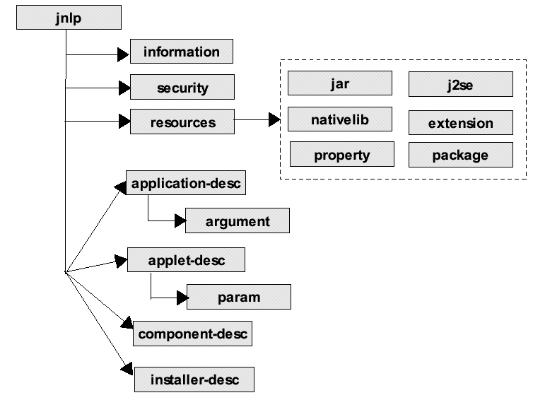

The core of the JNLP technology is the JNLP file. The JNLP file describes how
to download and launch a particular application.
The description of the JNLP file is split into functional categories. Thus, each section typically does not describe all sub-elements or attributes of a given element. To view the complete set of attributes for an element, the set of sub-elements, and a brief description of each, see Appendix C, which contains the formal syntax of the JNLP file in the form of an annotated XML DTD.

Figure 2: Overview of a JNLP file with the most common elements shown.
Figure 2 shows the outline of a JNLP file. It has five main sections:
jnlp element is the root element. It has a set of attributes
that are used to specify information that is specific to the JNLP file itself.information element describes meta-information about the
application. That information can, for example, be shown to the user during
download. This is explained later in this section.security element is used to request a trusted application
environment. This is described in detail in section 5.3.resources element specifies all the resources that are
part of the application, such as Java class files, native libraries, and system
properties. Section 4 describes this in detail.application-desc,
applet-desc, component-desc, and installer-desc.
Only one of the four can be specified in each JNLP file. A JNLP file with
either an application-desc or applet-desc is called an application descriptor,
whereas a JNLP file with an component-desc or an installer-desc
element is called an extension descriptor. These elements are described later
in this section.The following JNLP file fragment shows the outline with the actual syntax for a JNLP file:
<?xml version="1.0" encoding="UTF-8"?>
<jnlp spec="1.0+" codebase="http://www.mysite.com/application/" ...>
<information> ... </information>
<security> ... </security>
<resources> ... </resources>
<application-desc> ... </application-desc>
</jnlp>
The jnlp element contains the spec attribute that specifies the
versions of the specification that this JNLP file requires. The value of the
attribute is specified as a version string. If none of the versions of the specification
that the JNLP Client implements matches the version string, then the launch
should be aborted. If the attribute is not explicitly defined, it must be assumed
to be "1.0+", i.e., the JNLP file works with a JNLP Client that supports
the 1.0 specification and higher; i.e., it works with all JNLP Clients. See
Appendix A.
The default MIME type and extension that should be associated with a JNLP file are shown in the following table:
Default MIME Type:
application/x-java-jnlp-file
Default Extension:.jnlp
It is expected that future versions of this specification will introduce new elements and attributes that would be backwards-compatible with the current DTD. Thus, a JNLP Client should not reject a JNLP file that has extra attributes or elements. This means that the JNLP Client's XML parser must not validate the JNLP XML file against any fixed version of the JNLP DTD. However, like any XML parser, if the JNLP XML file contains a DOCTYPE declaration that specifies which DTD it uses, the parser may choose to validate the JNLP file against that specified DTD. If the JNLP file does not contain a DOCTYPE declaration, the parser may not validate the file against any DTD.
All references to external resources in a JNLP file are specified as URLs using the href attribute. For example:
<icon href="http://www.mysite.com/images/icon.gif">
<jar href="classes/MyApp.jar">
<jnlp href="http://www.mysite.com/App.jnlp">
An href element can either contain a relative URL or an absolute
URL as shown above. A relative URL is relative to the URL given in the codebase
attribute of the jnlp root element. For example:
<jnlp codebase="http://www.mysite.com/application/" ... >
A relative URL cannot contain parent directory notations, such as "..".
It must denote a file that is stored in a subdirectory of the codebase. URLs
in a JNLP file should always be properly encoded (also known as "escaped"
form in RFC 2396 Section 2.4.2), e.g., a space should be represented as %20
in a HTTP URL. A JNLP Client must use the URL exactly as specified in the JNLP
file when making a request to the Web server (see also section 6.1).
All resources can also be specified using a URL and version string pair. Thus, all elements that support the href attribute also support the version attribute, which specifies the version of the given resource that is required. For example,
<jar href="classes/MyApp.jar" version="1.2">
The version attribute can not only specify an exact version, as shown above, but can also specify a list of versions, called a version string. A version string is an ordered list of version-ranges separated by spaces. A version range is either a version-id, a version-id followed by a star (*), a version-id followed by a plus sign (+) , or two version-ranges combined using an ampersand (&). The star means prefix match, the plus sign means this version or greater, and the ampersand means the logical anding of the two version-ranges. For example:
<jar href="classes/MyApp.jar" version = "1.4.0_04 1.4*&1.4.1_02+" />
The meaning of the above is: the JAR file at the given URL that either has the version-id 1.4.0_04, or has a version-id with 1.4 as a prefix and that is not less than 1.4.1_02. The exact syntax and definition of version-ids and version strings is given in Appendix A.
Section 6 describes how resources are downloaded and how the version information is associated with the resources.
The information element contains information intended to be consumed
by the JNLP Client to integrate the application into the desktop, provide user
feedback, etc. For example:
<information>
<title>Cool App 1.0</title>
<vendor>My Corporation</vendor>
<description>Helps you keep cool</description>
<description kind="tooltip">CoolApp</description>
<homepage href="doc/index.html"/>
<icon href="icon.gif"/>
<offline-allowed/>
<shortcut online="false">
<desktop/>
<menu submenu="My Corporation Apps"/>
</shortcut>
</information>
<information locale="da_DK">
<description>Lidt for koldt?</description>
<description kind="tooltip">Køligt</description>
</information>
os attribute: Specifies the operating system for which the
information element should be considered. If the value is a prefix
of the os.name system property, then the information
element can be used. If the attribute is not specified, it matches all operating
systems.
arch attribute: Specifies the architecure for which the information
element should be considered. If the value is a prefix of the os.arch
system property, then the information element can be used. If the
attribute is not specified, it matches all architecures.
platform attribute: Specifies the platform for which the information
element should be considered. If the value is a prefix of the os.platform
system property, then the information element can be used. If the
attribute is not specified, it matches all platforms.
locale attribute: The locales for which the information
element should be used. Several locales can be specified,
separated with spaces. Each locale is specified by a language identifier, possibly
country identifier, and possibly a variant5.
The syntax is as follows:
locale ::= language [ "_" country [ "_" variant ] ]
An information element matches the current locale if i) the locale
attribute is not specified or is empty, or ii) if one of the locales specified
in the locale attribute matches the current locale. The rules for matching the
current locale are as follows:
The match is case-insensitive.
The JNLP Client must search through the information elements in
the order specified in the JNLP file. For each information element,
it checks if the value specified in the locale attribute matches the current
locale6.
If a match is found, the values specified in that information element
will be used, possibly overriding values found in previous information
elements.
In the above example, the descriptions have been localized for the Danish locale,
so these description values will be used whenever the current locale is matched
by da_DK. Since the information element for Danish
includes values only for the descriptions, the values for all other elements
(title, vendor,etc.) are taken from the information
element without a locale attribute. For all other locales besides
Danish, all values are taken from the information element with
no locale attribute. Thus, the locale-independent information needs only to
be specified once, in the information element without the locale
attribute.
title element: The name of the application.
vendor element: The name of the vendor of the
application.
homepage element: Contains a single attribute,
href, which is a URL locating the home page for the application.
It can be used by the JNLP Client to point the user to a Web page where they
can find more information about the application.
description element: A short statement about
the application. Description elements are optional. The kind attribute defines
how the description should be used, it can have one of the following values:
Only one description element of each kind can be specified. A
description element without a kind is used as a default value.
Thus, if a JNLP Client wants a description of kind short, and it is not specified
in the JNLP file, then the text from the description without an attribute is
used.
All descriptions contain plain text. No formatting, such as HTML tags is supported.
icon element: The icon can be used by a JNLP
Client to identify the application to the user.
The optional width and height attributes can be used
to indicate the resolution of the images. Both are measured in pixels.
The optional depth attribute can be used to describe the color
depth of the image.
The optional kind attribute can be used to indicate the use of
the icon, such as default, selected, disabled, rollover, splash, and shortcut.
The optional size attribute can be used to specify the download
size of the icon in bytes.
The image file can be either GIF or JPEG format, or other (possibly platform dependant) formats. The JNLP Client may assume that a typical JNLP file will have at least an icon in GIF or JPEG format of 32x32 pixels in 256 colors of the default kind. Its location is specified as described in section 3.4, and it is downloaded using the protocols described in Section 6.
offline-allowed element: The optional offline-allowed
element indicates if the application can work while the client system is disconnected
from the network. The default is that an application only works if the client
system is online.
This can be use by a JNLP Client to provide a better user experience. For example, the offline allowed/disallowed information can be communicated to the user, it can be used to prevent launching an application that is known not to work when the system is offline, or it can be completely ignored by the JNLP Client. An application cannot assume that it will never be launched offline, even if this element is not specified.
shortcut element: The optional shortcut
element can be used to indicate an application's preferences for desktop integration.
The shortcut element and its sub-elements provide hints that the
JNLP Client may or may not use. The shortcut element can contain
the optional online attribute, and the two optional sub-elements desktop and
menu.
online attribute: The optional online attribute
can be used in a shortcut element to describe the application's
preference for creating a shortcut to run the application online or offline.
If the value is "true" the application prefers to create a shortcut
that will launch the application online. If the value is "false" the
application prefers to create a shortcut that will launch the application offline.
desktop element: The optional desktop
element can be used to indicate an application's preference for putting a shortcut
on the users desktop.
menu element: The optional menu
element can be used to indicate an application's preference for putting a menu
item in the users start menus. The menu element can have a sub-menu
attribute.
submenu attribute: The optional submenu
attribute can be used to indicate an application's preference for where to place
the menu item, and can contain any string value.
The shortcut element provides hints to the JNLP Client which may
or may not be used.
association element: The optional association
element is a hint to the JNLP client that it wishes to be registered with the
operating system as the primary handler of certain extensions and a certain
mime-type. The association element must have the extensions and
mime-type attributes, and may contain the two optional sub elements
description, and icon.
description element: A short discription of the
association.
icon element: The icon can be registered with the
operating system as the default icon for items of this mime-type
extensions attribute: The extensions
attribute contains a list of file extensions (separated by spaces) that the
application requests it be registered to handle.
mime-type attribute: The mime-type
attribute contains a mime-type that the application requests it be registered
to handle.
An application making such a request should be prepared to have its main
method invoked with the arguments -open filename and -print
filename instead of any arguments listed with the application-desc
element.
related-content element: The optional related-content
element describes an additional piece of related content, such as a readme file,
help pages, or links to registration pages, as a hint to the JNLP Client. The
application is asking that this content be included in its desktop integration
. The related-content element has a manditory href
attribute. It can contain any of the following three sub-elements:
title element: The name of the related content.
description element: A short discription of the
related content.
icon element: The icon can be used by the JNLP
Client to identify the related content to the user.
Example of related-content elements:
<information>
...
<related-content href="readme.html">
<title>README</title>
<description>The README file contains additional
information about the product</description>
<icon href="readme.jpg"/>
</related-content>
<related-content href="register.html">
<title>Program Registration</title>
<description>Register this product to receive
support and valuable discounts of other
products</description>
</related-content>
</information>
update element: The update element is used to indicate the preferences for how application updates should be handled by the JNLP Client. The update element can contain the following two optional attributes:
check attribute: The check attribute indicates the preference for when the JNLP Client should check for updates, and can have one of the three values: "always", "timeout", and "background".
"always" means to always check for updates before launching the application.
A value of "timeout" (default) means to check for updates until timeout before launching the application. If the update check is not completed before the timeout, the application is launched, and the update check will continue in the background.
A value of "background" means to launch the application while checking for updates in the background.
policy attribute: The policy attribute indicates the preference for how the JNLP Client should handle an application update when it is known an update is available before the application is launched, and can have one of the following three values: "always", "prompt-update", and "prompt-run".
"always" (default) means to always download updates without any prompt.
A value of "prompt-update" means to ask the user if he/she wants to download and run the updated version, or launch the cached version.
A value of "prompt-run" means to ask the user if he/she wants to download and run the updated version, or cancel and abort runing the application.
For example:
<update check="always" policy="prompt-update">
An application descriptor either describes an application or an Applet.
A JNLP file is an application descriptor if the application-desc
element is specified.
The application-desc element contains all information needed to
launch an application, given the resources described by the resources
element. For example:
<application-desc main-class="com.example.MyMain">
<argument>Arg1</argument>
<argument>Arg2</argument>
</application-desc>
main-class attribute: The name of the class containing
the public static void main(String[]) method of the application.
This attribute can be omitted if the main class can be found from
the Main-Class manifest entry in the main JAR file. See section
5.2.
argument element: Contains an ordered list of arguments for the application.
Section 5.2 describes how an application is launched.
A JNLP file is an application descriptor for an Applet if the applet-desc
element is specified.
The applet-desc element contains all information needed to launch
an Applet, given the resources described by the resources elements.
For example:
<applet-desc
main-class="com.mysite.MyApplet"
documentbase="index.html"
name="MyApplet"
width="500"
height="300">
<param name="Param1" value="Value1"/>
<param name="Param2" value="Value2"/>
</applet-desc>
main-class attribute: Name of the main
Applet class. This is the name of the main Applet class (e.g.,
com.mysite.MyApplet) , as opposed to the HTML <applet>
tag's code attribute as a filename (e.g., MyApplet.class).
documentbase attribute: The document base for
the Applet as a URL. This is available to the Applet through the AppletContext.
The documentbase is provided explicitly since an Applet launched
with a JNLP Client is not embedded in a Web page.
name attribute: Name of the Applet. This is available
to the Applet through the AppletContext.
width attribute: Width of the Applet in pixels.
height attribute: Height of the Applet in pixels.
The JNLP Client may set the actual size to be more or less than the specified size, to fit within the minimum and maximum dimensions for a Java Frame on each platform. |
param element: Contains a parameter to the Applet.
The name attribute contains the name of the parameter, and the
value attribute contains the value. The parameters can be retrieved
with the Applet.getParameter method.
The codebase for the Applet, available through the java.applet.getCodebase
method, defaults to the value of the codebase attribute of the
jnlp element. If no value is specified for that attribute, then the codebase
is set to the URL of the JAR file containing the main Applet class.
Section 5.2 describes how an Applet is launched.
An extension descriptor can either describe a component extension or an installer extension.
A JNLP file is a component extension if the component-desc element
is specified. A component extension is typically used to factor out a set of
resources that are shared between a large set applications. For example, this
could be a toolkit for XML parsing. The following shows a sample JNLP fragment
that specifies a component descriptor:
<jnlp>
...
<resources>
<!-- Resources defined by the component-desc -->
<jar href="http://www.mysite.com/my-component/A.jar"/>
...
</resources>
<component-desc/>
</jnlp>
No java elements can be specified as part of the resources. Section
4 describes how these resources become part
of the application that uses the extension.
An extension descriptor is downloaded using the extension download protocol described in section 6.4.
A JNLP file is an installer extension if the installer-desc element
is specified. It describes an application that is executed only once, the first
time the JNLP file is used on the local system. The following shows a sample
JNLP fragment that specifies an installer descriptor:
<jnlp>
...
<resources>
<!-- Resources used for installer -->
<jar href="http://www.mysite.com/my-installer/installer.jar"/>
...
</resources>
<installer-desc main-class="com.mysite.installer.Main"/>
</jnlp>
main-class attribute: The name of the class containing
the public static void main(String[]) method of an installer/uninstaller
for this extension. This attribute can be omitted if the main class
can be found from the Main-Class manifest entry in the main JAR
file. This is described in detail in section 5.2.
The installer extension is intended to install platform-specific native code that requires a more complicated setup than simply loading a native library into the JVM, such as installing a JRE or device driver. The installer executed by the JNLP Client must be a Java Technology-based application. Note that this does not limit the kind of code that can be installed or executed. For example, the installer could be a thin wrapper that executes a traditional native installer, executes a shell script, or unzips a ZIP file with native code onto the disk.
The installer communicates with the JNLP Client using the ExtensionInstallerService
(see section 7.8 for details). Using this
service, the installer informs the JNLP Client what native libraries should
be loaded into the JVM when the extension is used, or, in the case of a JRE
installer, inform the JNLP Client how the installed JRE can be launched.
Installers should avoid having to reboot the client machine if at all possible. While some JNLP Clients may be able to continue with the installation/launch after a reboot, this ability is not required.